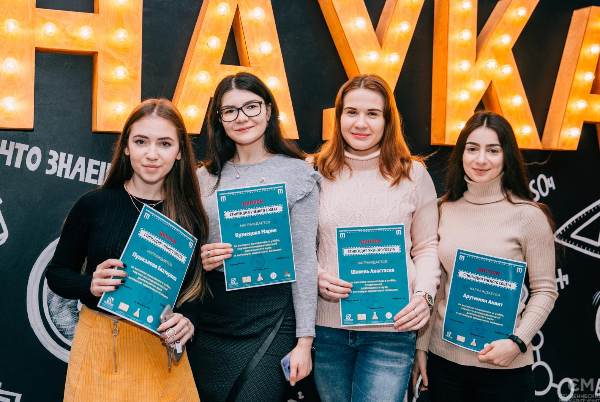
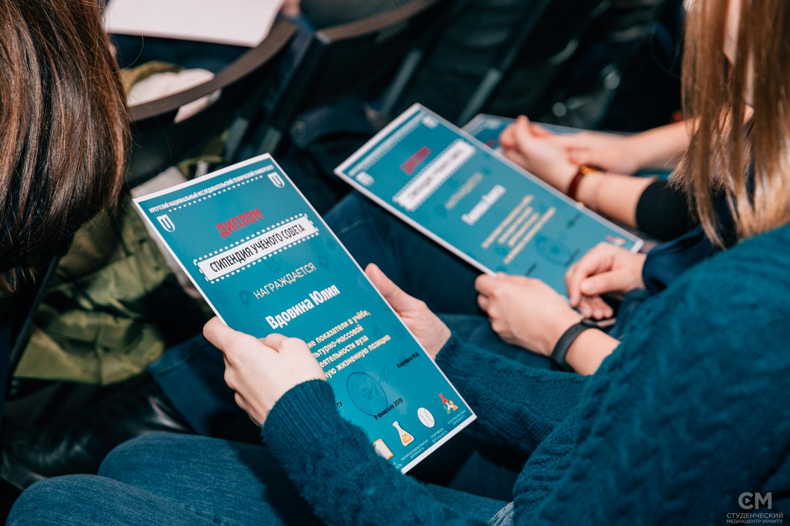
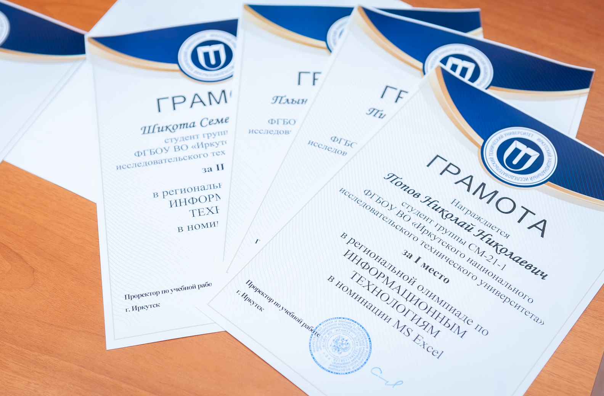
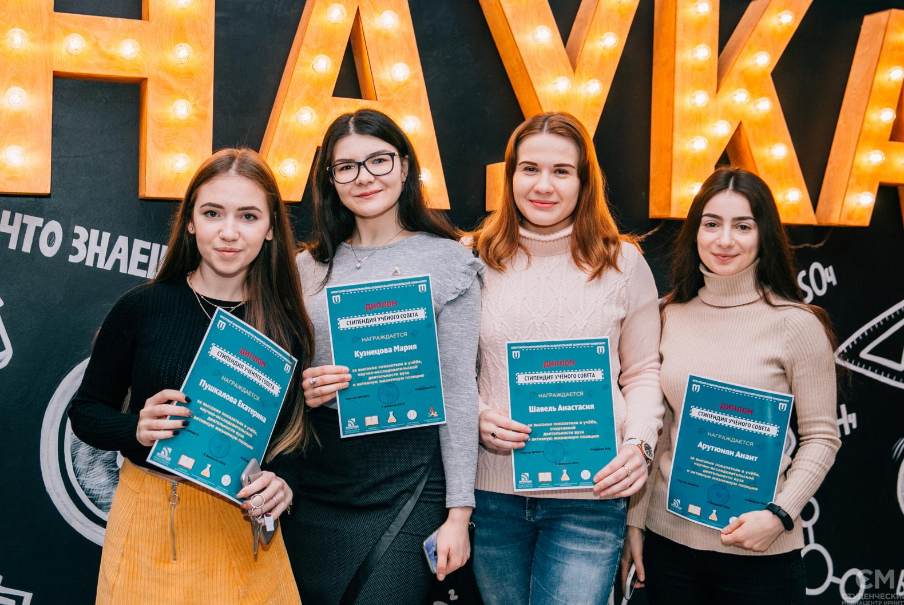
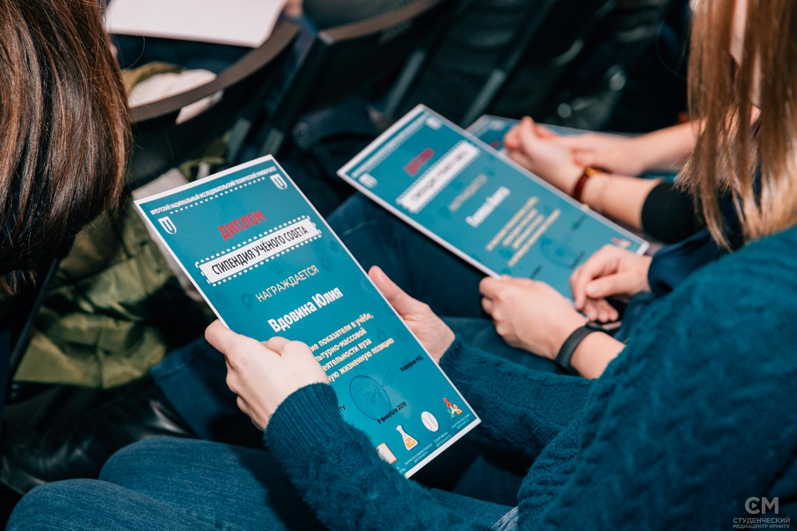
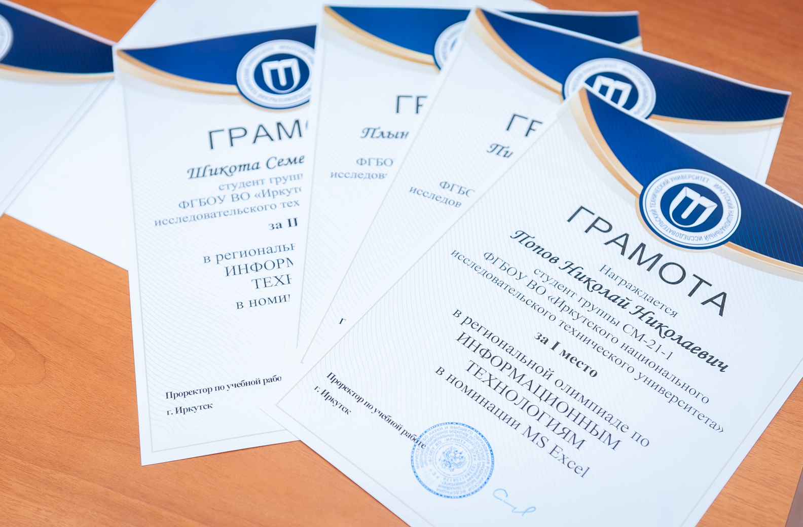

Информационные системы и технологии в административном управлении
Краткие сведения об образовательной программе:
Программа бакалавриата по профилю подготовки «Информационные системы и технологии в административном управлении» включает в себя изучение теоретических основ и приобретение практических навыков разработки программного обеспечения, создания и эксплуатации информационных систем и технологий, предназначенных для решения разнообразных задач: от автоматизации бизнес-процессов, до разработки мобильных и web-приложений и создания информационных технологий поддержки принятия решений.
В ходе обучения студенты учатся применять языки (C, C++, C#, Java, PHP, JavaScript, Python, Kotlin) и технологии программирования, в том числе web-технологии, технологии анализа данных и искусственного интеллекта.
Возможные места прохождения производственной практики:
- ISPsystem
- КРОК
- En+
- Yandex
- ИАЗ
- Rkit
- 1PS.ru
Кем работают наши выпускники:
- Разработчик ПО
- Web-разработчик
- 1С-разработчик
- Web-аналитик
- UX-специалист
- Системный аналитик
- Data Engineer
- Data Scientist
- QA-специалист
- Менеджер ИТ-проектов
- Desktop-разработчик
- DevOps
- Android/iOS-разработчик
- VR-разработчик
Отзывы наших выпусников
Иркутский Государственный Технический Университет очень хорошее учебное заведение. Большой выбор специальностей на любой вкус просто поражает. В преподавательский состав входят в основном люди, имеющие ученую степень, что значительно на мой взгляд улучшает качество преподавания. Имеется огромная библиотека, где можно найти любую литературу, прекрасно оборудованный зал для занятий спортом. Знания, данные мне за время обучения, дали мне возможность рабоать на высоко оплачиваемой работе. Навыки программирования, умения работать с базами данных, всё это мне помогает в работе. Я не пожелела, что закончила именно это направление в этом ВУЗе!
 Видеть результат своей работы - многого стоит, именно это порой и придаёт жизненной энергии и веры в
лучшее.
Благодаря полученным навыкам из данной программы обучения, я смогла найти достоянную работу с
высокой заработной платой.
Очень рада, что приняла верное решение и закончила данное обучение. Преподаватели ясно и логично
объясняют материал,
комментирует сложные моменты, выделяет главное в теме. Обучение проходило качественно и интересно.
Мой родной политех
дал мне просто прекрасное образование, которое позволяет мне сегодня с легкостью решать сложные
технические проекты.
Выражаю огромную благодарность руководству и коллективу ВУЗа!
Видеть результат своей работы - многого стоит, именно это порой и придаёт жизненной энергии и веры в
лучшее.
Благодаря полученным навыкам из данной программы обучения, я смогла найти достоянную работу с
высокой заработной платой.
Очень рада, что приняла верное решение и закончила данное обучение. Преподаватели ясно и логично
объясняют материал,
комментирует сложные моменты, выделяет главное в теме. Обучение проходило качественно и интересно.
Мой родной политех
дал мне просто прекрасное образование, которое позволяет мне сегодня с легкостью решать сложные
технические проекты.
Выражаю огромную благодарность руководству и коллективу ВУЗа!
 Единственный научно-исследовательский университет за Уралом! Лучшие традиции обучения, отзывчивые
преподаватели
и отличные наставники. Всё это подтверждается аккредитованностью организации на высокие баллы.
Хорошее место
для науки, творчества и обучения. Множество направлений и специальностей, международные стажировки,
открытые лаборатории
и свой собственный технопарк. Возможность продолжить обучение в магистратуре и аспирантуре. Есть
военная Кафедра. Обучение специальности
на высшем уровне! Я и все мои однокурсники трудоустроены! Мне дали отличные знанмя для работы
разработчиком. Были изучены качественно языки
программирования. Я рад, что получил образование именно здесь! Девиз политеха - "Знания - для себя,
достижения - для Отечества!"
Единственный научно-исследовательский университет за Уралом! Лучшие традиции обучения, отзывчивые
преподаватели
и отличные наставники. Всё это подтверждается аккредитованностью организации на высокие баллы.
Хорошее место
для науки, творчества и обучения. Множество направлений и специальностей, международные стажировки,
открытые лаборатории
и свой собственный технопарк. Возможность продолжить обучение в магистратуре и аспирантуре. Есть
военная Кафедра. Обучение специальности
на высшем уровне! Я и все мои однокурсники трудоустроены! Мне дали отличные знанмя для работы
разработчиком. Были изучены качественно языки
программирования. Я рад, что получил образование именно здесь! Девиз политеха - "Знания - для себя,
достижения - для Отечества!"
Достижения наших студентов
Студенты нашего направления активно принимают участие в различных олимпиадах и конкурсах.
 





Наши достижения:
2021 год:- ИРНИТУ во второй раз вошел в «100 лучших вузов России», заняв 63 место с итоговым баллом 30,76. Иркутский политех поднялся на 14 позиций вверх.
- ИРНИТУ занял 389 место в рейтинге UI GreenMetric в категории World's Most Sustainable University. Целью данного рейтинга является оценка текущего состояния и политики, связанных с зеленым кампусом и устойчивостью в университетах по всему миру и отражает усилия, прилагаемые учреждением для реализации экологически чистых и устойчивых стратегий и программ.
- ИРНИТУ вошел в рейтинг «Университеты для будущей элиты. 100 лучших вузов России» по версии Forbes. ИРНИТУ занял на 77-е место с результатом 19,67 баллов.
- ИРНИТУ улучшил свои позиции в ежегодном Национальном рейтинге университетов (НРУ), заняв 29 место (493 балла).
- ИРНИТУ впервые вошел в глобальный рейтинг университетов Quacquarelli Symonds (QS) «Страны Европы и Центральной Азии с переходной экономикой». ИРНИТУ попал в группу #251-300.
- ИРНИТУ вошел в ТОП-10 рейтинга вузов-участников стипендиальной программы 2018/19 Владимира Потанина.
- ИРНИТУ – единственный из университетов Восточной Сибири, вошедший в глобальный рейтинг Times Higher Education «University Impact Rankings 2019» , заняв позицию 301+ в мире.
- ИРНИТУ впервые вошел в Мировой профессиональный рейтинг университетов (Worldwide Professional University Rankings) RankPro 2018/2019, который составляет группа «Global World Communicator» при поддержке гранта Еврокомиссии и ЮНЕСКО. Среди 600 лидирующих вузов мира, включенных в рейтинг, 30 российских университетов. ИРНИТУ занимает 495 место среди университетов мира и 23 позицию среди российских вузов.
Как нас найти?
Иркутский национальный исследовательский технический университет (ИРНИТУ)- 664074, г. Иркутск, ул. Лермонтова 83,
- тел/факс 8 (3952) 405-100, 405-009,
- e-mail: info@istu.edu
- 664074, г. Иркутск, ул. Лермонтова 83, главный корпус ИРНИТУ,
- аудитория - А-105
- тел./факс: 8 (3952) 405-405
- e-mail: cpk@istu.edu